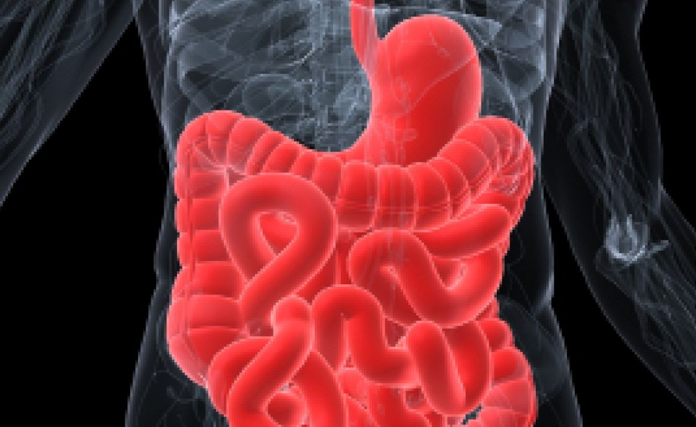

Another Germ for Breakfast
Helpful Bacteria In Your Yogurt
Tina Xu
Spring 2009
 Bacteria
usually elicit negative thoughts when brought up. These microorganisms,
though diminutive in size, force us to wage a constant war to protect
ourselves from their influence. Yet, certain strains of bacteria are
essential to our livelihood. Some companies such as Dannon have honed
in on this fact and are finding ways to allow people to incorporate
probiotic bacteria into their diet for added health benefits. Dannon
claims that consumption of these microorganisms promotes “good health,
restores vigor, combats intestinal and other disease disorders,” and
improves intestinal transit. Their claims resonate with the increasing
amount of research showing that probiotic organisms possess therapeutic
value when ingested in adequate quantities.
The intestines of the human digestive system provide
a niche for billions of bacteria. The intestinal flora promotes vitamin
synthesis, protein synthesis, digestion and absorption, the prevention
of pathogenic colonization, and the stimulation of an immune response
in the host. The integrity and composition of the microflora is
essential to an organism’s overall health. “Probiotic bacteria” is a
very general category for an extremely diverse and complex group of
organisms, but they share a common trait: maintaining a balance within
an organism’s intestines and providing health benefits. Since bacteria
are naturally found in the intestines, consuming them can theoretically
enrich the flora as long as the strain is able to successfully colonize
the gastrointestinal (GI) tract.
In a study by Philippe Marteau, MD, PhD, and
colleagues at the European Hospital Georges Pompidou in Paris, France,
the Bifidobacterium animalis strain was shown to improve colonic
transit time in a study involving 36 healthy women, where neither the
researcher nor the participants knew who received treatment. One group
was given three cups of fermented milk with the Bifidobacterium
animalis strain, and the control group three cups without it. The
experimental group discharged a greater stool mass than the control,
suggesting the influence of the probiotic bacteria in colonic transit.
Sangwei Lu, PhD, School of Public Health at the University of
California, Berkeley says, “Activa [sic] aiding in the regulation of
the microflora would ultimately benefit the individuals overall
health.” This is because the GI tract is the initial defense in the
immune system since it forms a barrier between the external and
internal environments.
Currently, the amount of probiotic bacteria in
products lacks strict regulations as scientists are still undecided
about the proper dosage level for therapeutic treatments. Probiotic
bacteria must be able to survive the acidic environment of the stomach
and colonize the GI tract to produce the desirable effects. According
to the review, “Yogurt as Probiotic Carrier Food,” by Analie
Lourens-Hattingh and Bennie Viljoen in the International Dairy Journal,
the survival of bacteria cultures depends on interactions between
strains, storage conditions, and acidity and oxygen levels. Since
bifidobacteria are anaerobic, oxygen toxicity can occur during storage
when oxygen permeates through a container. If these conditions are not
taken into consideration, the amount of viable probiotic bacteria may
be extremely low when the product finally reaches consumers in contrast
to initial amounts during production. Glass, rather than plastic,
containers were found to be more favorable because of its thickness and
ability to keep out oxygen. Shira Doron, MD, at Tufts Medical Center,
points out, “You simply cannot lump all probiotic bacteria into one
category like you would for antioxidants or vitamins. They may be the
same genus and species but they are so specific that even down to the
each individual strain has a different effect.”
Beyond its yogurt application, probiotic bacteria
have become a strong ally in the medical world. Probiotic bacteria have
been found to improve other aspects of common health problems such as
reversing lactose intolerance and regulating cholesterol levels through
interactions with the intestinal tract. The interactions between
probiotic bacteria and the human immune system have sparked much
interest as more and more pathogenic bacteria are growing resistant to
antibiotics. Probiotic bacteria may serve as an alternative to harsh
chemicals. Some strands of probiotic bacteria secrete substances such
as short chain fatty acids and hydrogen peroxide that can kill other
bacteria. Methicillin-resistant Staphylococcus aureus is a bacterium
that causes many serious infections in humans because of its resistance
to a large group of antibiotics. Yet, despite its resistance, it was
completely eliminated when incubated with probiotic bacteria.
The complexity of probiotic bacteria’s role in our
immune system and the limited knowledge of probiotic effects show that
additional scientific exploration awaits. Incorporating probiotic
bacteria into yogurt has been a successful first step in familiarizing
the public with a potentially powerful ally. In a time when medical
dogma emphasizes the importance of fending off bacteria, these microbes
may one day play a unique and vital role in saving lives.
About the Author
Tina Xu is a third year
Integrative Biology major who plans on pursuing a Masters of Public Health and
attending medical school.